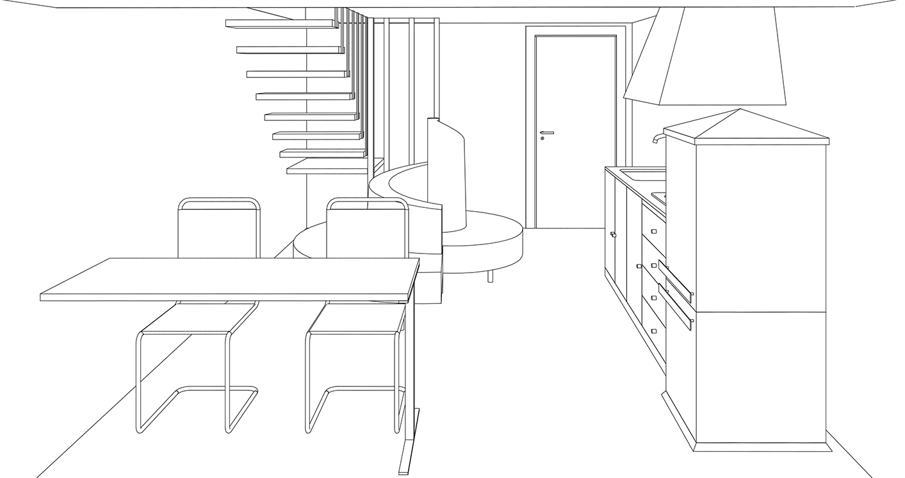
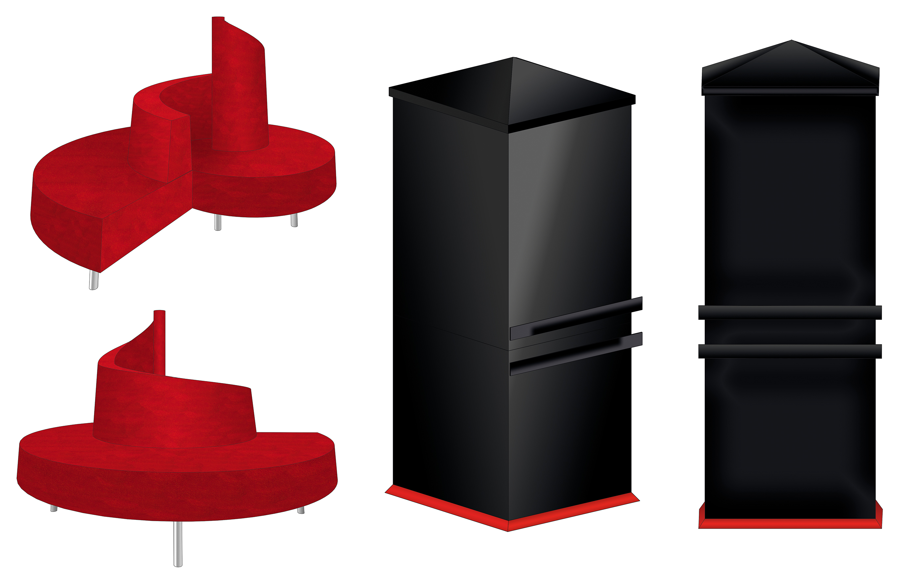

Cucina

Vista tridimensionale della cucina e sala da pranzo, situate all'ingresso della suite. Nell'arredamento in stile anni '90 i colori predominanti sono il rosso della spettacolare poltrona Tatlin che spicca al centro del locale come elemento dominante e il nero del rarissimo
frigorifero collezione Wizard di Zanussi, e altri accessori. Il tavolo da pranzo a penisola in stile essenziale si affaccia sulla parete di vetro che dà su un giardino. Sotto, rendering prospettici della poltrona e del frigorifero.
